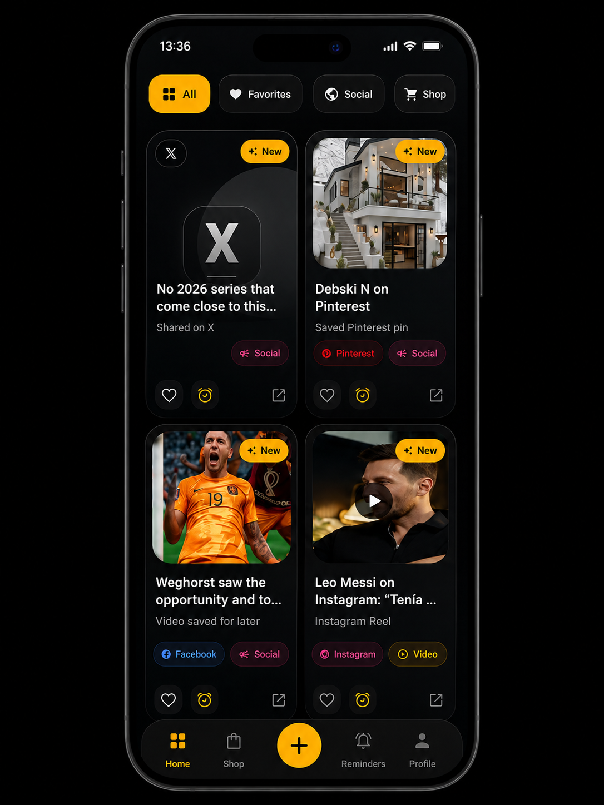
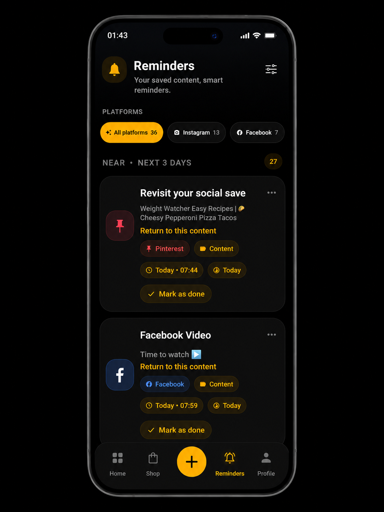
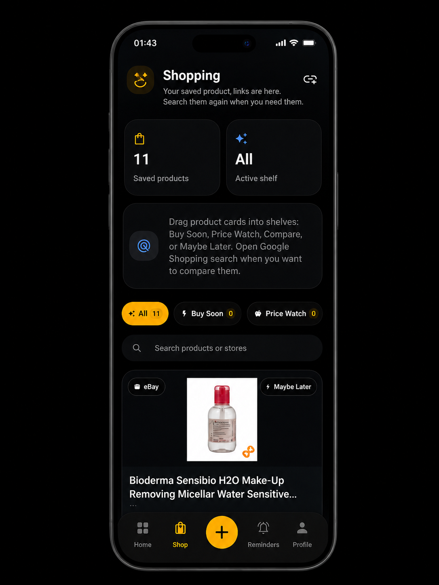
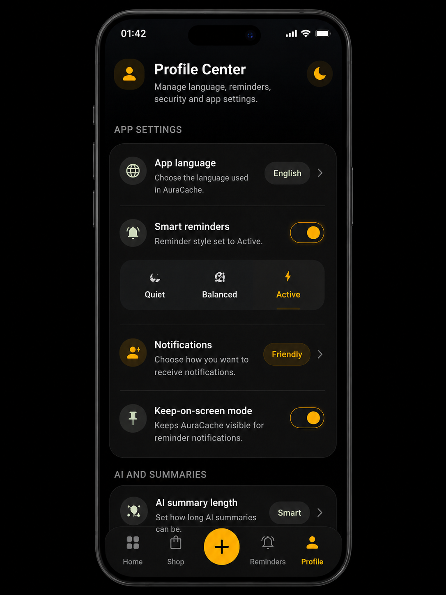

Home Google Play Launch Impending
Save useful links.
Find them when they matter.
AuraCache is a quiet, organized space for links you actually want to revisit. Social posts, shopping finds, articles, videos, and inspiration — categorized, sorted, and ready when you are.
Be the first to know when we are live on Google Play. Support: hello@auracache.app
✓ Smart Link Saving
✓ Dedicated Shopping Shelves
✓ Time & Category Reminders

Reminders
ShopThe Problem
Saving is easy. Coming back later is the hard part.
Tabs get buried, screenshots disappear, and bookmarks turn into clutter. AuraCache is built for people who save links with a reason — and want those links to stay useful.
Products
Revisit shopping finds before they are forgotten.
Reading
Keep articles ready for the right moment.
Videos
Save content you actually want to watch later.
Ideas
Turn scattered inspiration into organized action.
The Solution
A smarter home for the links you mean to use later.
AuraCache connects saving, organizing, and remembering into one simple flow — so a saved link can become a useful next step.
Designed around intent, not clutter.
Every saved link has a reason behind it: compare a product, finish a video, read an article, revisit a social post, or keep an idea alive.
- Save links from browsers, apps, marketplaces, and content platforms.
- Keep practical categories for shopping, videos, articles, work, ideas, and more.
- Add reminders so useful links return when they can still help.
Quiet structure for a noisy internet.
AuraCache keeps the experience focused. Instead of another endless feed, it gives you a clean place to collect, review, and act on what you already decided was worth saving.
- Clean dashboard for saved links and organized content.
- Clear titles and categories so links are easier to understand later.
- Simple controls for reminders, privacy, and your saved library.
App Preview
One focused place for the links you save.
Home, reminders, shopping, and profile controls are designed around a consistent, easy-to-scan experience.
Home
Saved links stay visual, organized, and easy to return to with customizable folders and drag & drop support.
Reminders
Bring useful links back when they should be watched, read, compared, or completed. Features notification health checks.
Shop
Keep product links separate from general saves, categorized onto dedicated shelves like "To Buy" or "Price Tracking".

Profile
Control multi-language options (TR, EN, ES), voice select, dark/light theme, and biometric lock settings.
Core Features
Everything you save should have a next step.
AuraCache is designed to help saved links become useful again — not just stored and forgotten.
Shopping Shelf
Dedicated Shopping Screen & Shelf System
E-commerce links shouldn't clutter your main feed. AuraCache automatically separates product links from Amazon, Etsy, and other marketplaces. Organize them into custom shelves like "To Buy", "Buy Later", or "Price Tracking" with automatic metadata controls.
🛒 To Buy
⏳ Buy Later
📉 Price Tracking
Integration
Clean Metadata Extraction
We work specifically to extract clean titles, descriptions, and visual cards from platforms like Instagram, Facebook, Reddit, Pinterest, TikTok, Prime Video, and Netflix, ensuring stable canonical links.
AI Local Summary
Smart Local Summaries
No noisy AI chatbots. AuraCache securely generates locally stored summaries of your links. Avoid generic summaries and get straightforward translations (TR, EN, ES) with simple, tech-free wording.
Organization
Folders with Drag & Drop Controls
Manage your library using standard or custom folders. Easily assign colors and icons to your folders, and reorganize them instantly with smooth drag-and-drop mechanics to group your links by current context.
📁 Research
📁 Travel Ideas
📁 Daily Reads
Smart Nudges
Category Dürtmeleri
If you haven't checked a certain category in a while, AuraCache gives you non-intrusive category prompts like "Check your travel ideas again" or "Review your saved recipes."
Security & Alarms
Precise Reminders & Vault
Set date/time alarms for links with active status indicators. Rest easy knowing your library can be secured behind biometric vault locks (Fingerprint / Face ID) and wiped completely whenever you choose.
How It Works
From saved link to useful action.
AuraCache follows a simple flow: save, organize, remind, and revisit.
1
Save
Save links seamlessly from your favorite apps, browsers, and social networks.
2
Organize
Keep saved content grouped cleanly by categories, custom colors, and shelves.
3
Remember
Set active alarms or let category nudges quietly bring back what you saved.
4
Act
Read, shop, or research without getting distracted by endless feeds.
Why AuraCache
Bookmarks save links. AuraCache brings them back.
Traditional bookmarks store pages. AuraCache is designed for people who save content for a reason.
Typical bookmarks
- × Save and forget inside static folders.
- × No built-in reminder flow.
- × No organization by intent or context.
- × Browser-first storage that becomes clutter.
AuraCache
- ✓ Save and revisit with action-based memory.
- ✓ Reminders and category nudges for useful resurfacing.
- ✓ Clear categories, custom folders, and shopping shelves.
- ✓ Cross-platform saving in one quiet, focused space.
FAQ
Quick answers about AuraCache.
What can I save with AuraCache?
You can save social posts (Instagram, TikTok, Reddit, etc.), shopping products (Amazon, Etsy, etc.), study and homework resources, articles, videos, Netflix or Prime Video links, recipes, and more.
Is AuraCache a social network or streaming service?
No. AuraCache does not host social posts or video streams. It operates as a personal productivity assistant, helping you organize the links you collect from other applications.
Does AuraCache require AI to work?
No. Core link saving, folder sorting, custom shopping shelves, and notifications run entirely locally. Optional AI integrations can be activated with custom keys to generate summaries and refine metadata.
How is AuraCache different from standard bookmarks?
While bookmarks are static storage, AuraCache organizes by intent, separates shopping items, provides date/time reminders, and monitors notification permissions for continuous access.
Stay Updated on Our Progress
Follow AuraCache for product updates, release notes, and practical link-saving tips as we prepare for our Google Play launch.